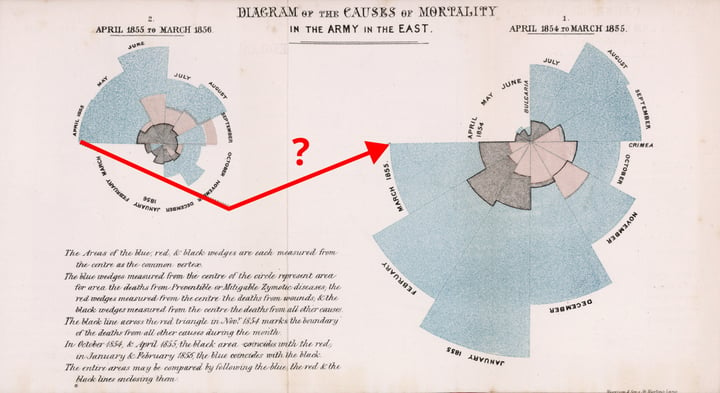

🪷 The Pond #2: Be unfrogettable
Getting ready for summer
by Ada Homolova · June 17, 2025

Getting ready for summer
For the past few weeks, I’ve been paws-deep in data visualization theories while preparing my upcoming course on data storytelling. It’s been a fascinating journey. Dusting off whatever Tufte was saying, zooming in on Gestalt principles - I’ll be sharing some of what I found here in The Pond.
Before this frog takes off for the summer, there is still a chance for one last data visualization course at a reduced price for you!
And if you missed it: In my latest YouTube video I drew some question marks around Florence Nightingale’s dataviz choices.
Un-🐸-ettable Data Visualisations
As summer heats up, so does our love for great data storytelling! ❤️🔥 Use code FROSCHLOVE for 20% off and join me for a playful, hands-on workshop where we’ll transform numbers into compelling visual stories—no software required! Just grab some paper, colorful pencils, and let your creativity leap.
📅 When? 23 June, 16:00
💖 Investment? 40 EUR 32 EUR (with code FROSCHLOVE)
🐸 Ready to dive in? Book your spot here!
🎥 Choosing the Right Chart
Last week, I planned a YouTube live session all about how to choose the right form for your data. I also did not realize that it was a national holiday in half of Europe. Luckily, YouTube is forever!
Data visualisation theory here I come!
The internet blessed me with these three gifts this week – passing them along!
🌸 Finding The Right Elements For an Award-Winning Dashboard - write up of choices that lead to this beautiful dashboard
🫧 Gestalt Principles in Data Visualization - practical application of gestalt principles in creating data visualizations with examples
📽️ Stop Sharing Data—Start Telling Stories - 10+ chart remakes in 20 minutes - impressive!
That’s it for now!
That’s all for this dip into the pond. See you later!
With 💚 and 🐸,
Ada
Are you enjoying this newsletter? Join The Pond on Discord and let me know!